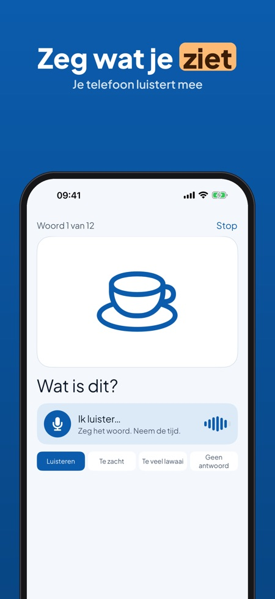
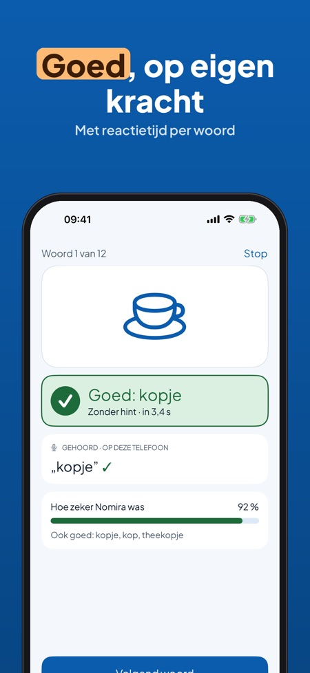
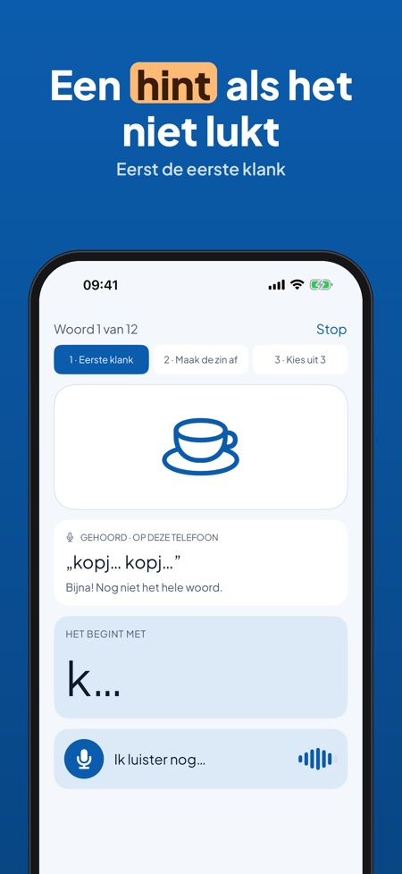

Nomira helpt mensen met afasie om elke dag woorden te oefenen. Je ziet een plaatje, zegt het woord hardop en Nomira laat zien of het woord gehoord is.



Voor mensen met afasie die elke dag woorden willen oefenen, samen met familie of mantelzorger.
Nee. Nomira is een oefenapp: een aanvulling op logopedie, geen vervanging. Nomira stelt geen diagnose en behandelt niets.
Lukt een woord niet, dan volgt eerst de eerste klank, dan een zin om af te maken en dan drie woorden om uit te kiezen.
Nee. Woorden worden op je telefoon herkend; er wordt geen geluid opgeslagen of verstuurd.
Jij beslist altijd zelf: met één tik geef je aan dat het toch goed was. Zonder microfoon geef je zelf aan of het goed ging.
De set Keuken met 15 woorden, luisteren, alle drie de hints, reactietijd en de voortgang van deze week, plus de set Feestdagen en familie.
Een eenmalige aankoop: alle 10 sets, ook werkwoorden, de voortgang van eerdere weken en het weekrapport als PDF. Geen abonnement, geen reclame.
Nomira helpt mensen met afasie om elke dag woorden te oefenen. Je ziet een plaatje en zegt het woord hardop. Nomira luistert op je telefoon en laat zien of het woord gehoord is. Lukt het niet, dan volgt een hint: eerst de eerste klank, dan een zin om af te maken, dan drie woorden om uit te kiezen.
De set Keuken met 15 woorden, luisteren, alle drie de hints, reactietijd, de voortgang van deze week en zelf aangeven of het goed ging werken zonder aankoop. Nomira Plus is een eenmalige aankoop: alle 10 sets, ook werkwoorden ("Wat doet hij?"), de voortgang van eerdere weken en het weekrapport als PDF, dat je zelf verstuurt via mail, Berichten of AirDrop. Geen abonnement, geen reclame.
Nomira is een oefenapp: een aanvulling op logopedie, geen vervanging ervan. Nomira stelt geen diagnose en behandelt niets. Herkenning kan zich vergissen; jij beslist altijd zelf. Woorden worden op je telefoon herkend; er wordt geen geluid opgeslagen of verstuurd. Zonder microfoon geef je zelf aan of het goed ging.